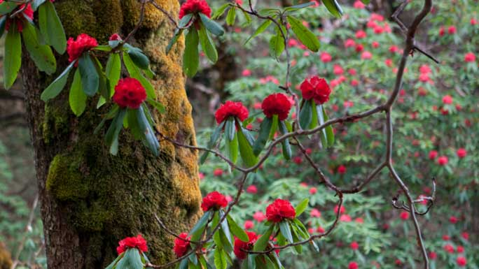
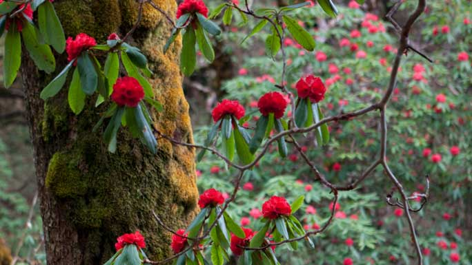

TEHRATHUM-SANKHUWASABHA
Follow the rhododendron trail this spring, trekking through colorful hillsunder the Himalayas of East Nepal.
This is an area of mixed pastures, stunning mountain views, beautiful sunrise and sunset, and friendly Limbu people. Offering excellent respite from city life, the diverse landscape includes terraced fields as well as the Terai plains covered with different types of vegetation.
Basantapur (2,200 m) in Tehrathum also hosts trekkers on the way to Taplejung and Mt. Kanchenjunga. The little Basantapur Bazaar is set up in an enchanting surrounding of mountains and greenery.
The weather here is cool and temperate most times of the year, making Basantapur ideal to visit anytime. The best times to visit are autumn and spring, between October-December or from February-April. Summers are pleasant with temperatures ranging from 10 to 20 degree Celsius, while winters mild. From Tin Jure Danda (3,066 m) (ridge) one can see magnificent views of sunrise and sunset, and majestic view of the mountains. Thirty-four varieties of rhododendron are found here. Tin Jure Danda is about a half hour away from Basantapur Bazaar.
 Tinjure Milke Jaljale Trail, also known as the Rhododendron Trail, spreads across Taplejung, Terathum and Sankhuwasabha districts. Hille, north of Dharan, is a good place to start out. Alternately, you can start from Phidim at the end of a newly completed dry season dirt road that traverses Ilam's young tea estates. Heading northeast out of Hille, the trail climbs gradually through settlements of recent migrants from the northern Olangchung region, trans-Himalayan yak drivers who live for months on tsampa (roasted barley flour), dried yak meat, and cheese.
Gupha Pokhari is a serene lake set on a ridge looking east at the Kanchenjunga massif and west at Makalu and the Khumbu Himal (mountain). From here, a shorter trek follows the Milke Danda ridge due north, climbing to 4,700 m into the Jaljale Himal, a remote area spotted with lakes and inhabited by mountain peoples from Tibet. You can then descend east to the Mewa Khola (stream) and continue to Taplejung's airfield and further to the Kanchenjunga Conservation Area.
The weather here is cool and temperate most times of the year, making Basantapur ideal to visit anytime. The best times to visit are autumn and spring, between October-December or from February-April. Summers are pleasant with temperatures ranging from 10 to 20 degree Celsius, while winters mild. From Tin Jure Danda (3,066 m) (ridge) one can see magnificent views of sunrise and sunset, and majestic view of the mountains. Thirty-four varieties of rhododendron are found here. Tin Jure Danda is about a half hour away from Basantapur Bazaar.
 Tinjure Milke Jaljale Trail, also known as the Rhododendron Trail, spreads across Taplejung, Terathum and Sankhuwasabha districts. Hille, north of Dharan, is a good place to start out. Alternately, you can start from Phidim at the end of a newly completed dry season dirt road that traverses Ilam's young tea estates. Heading northeast out of Hille, the trail climbs gradually through settlements of recent migrants from the northern Olangchung region, trans-Himalayan yak drivers who live for months on tsampa (roasted barley flour), dried yak meat, and cheese.
Gupha Pokhari is a serene lake set on a ridge looking east at the Kanchenjunga massif and west at Makalu and the Khumbu Himal (mountain). From here, a shorter trek follows the Milke Danda ridge due north, climbing to 4,700 m into the Jaljale Himal, a remote area spotted with lakes and inhabited by mountain peoples from Tibet. You can then descend east to the Mewa Khola (stream) and continue to Taplejung's airfield and further to the Kanchenjunga Conservation Area.